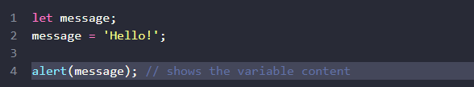
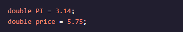
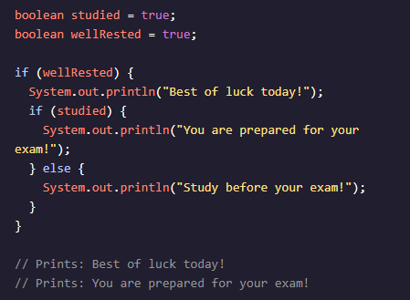
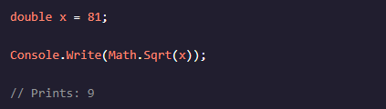
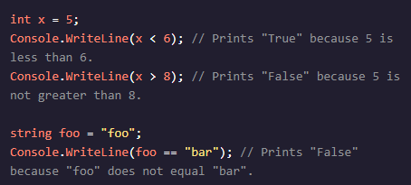
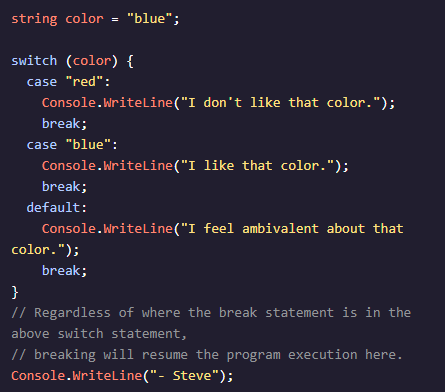
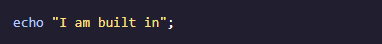
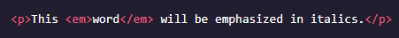
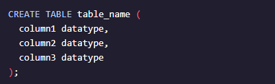
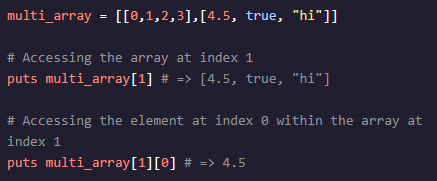

Java Script
This part of the tutorial is about core JavaScript, the language itself. But we need a working environment to run our scripts and, since this book is online, the browser is a good choice. We’ll keep the amount of browser-specific commands (like alert) to a minimum so that you don’t spend time on them if you plan to concentrate on another environment (like Node.js). We’ll focus on JavaScript in the browser in the next part of the tutorial. So first, let’s see how we attach a script to a webpage. For server-side environments (like Node.js), you can execute the script with a command like "node my.js".
JavaScript programs can be inserted almost anywhere into an HTML document using the <script> tag.
The first thing we’ll study is the building blocks of code.
Statements are syntax constructs and commands that perform actions. We’ve already seen a statement, alert('Hello, world!'), which shows the message “Hello, world!”. We can have as many statements in our code as we want. Statements can be separated with a semicolon. For example, here we split “Hello World” into two alerts:
Usually, statements are written on separate lines to make the code more readable:
A semicolon may be omitted in most cases when a line break exists. This would also work:
Here, JavaScript interprets the line break as an “implicit” semicolon. This is called an automatic semicolon insertion. In most cases, a newline implies a semicolon. But “in most cases” does not mean “always”! There are cases when a newline does not mean a semicolon. For example:
The code outputs 6 because JavaScript does not insert semicolons here. It is intuitively obvious that if the line ends with a plus "+", then it is an “incomplete expression”, so a semicolon there would be incorrect. And in this case, that works as intended.
As time goes on, programs become more and more complex. It becomes necessary to add comments which describe what the code does and why. Comments can be put into any place of a script. They don’t affect its execution because the engine simply ignores them. One-line comments start with twoforward slash characters //. The rest of the line is a comment. It may occupy a full line of its own or follow a statement. Like here:
Multiline comments start with a forward slash and an asterisk /* and end with an asterisk and a forward slash */. Like this:
The content of comments is ignored, so if we put code inside /* … */, it won’t execute.
Variables Most of the time, a JavaScript application needs to work with information. Here are two examples: An online shop – the information might include goods being sold and a shopping cart. A chat application – the information might include users, messages, and much more. Variables are used to store this information.
A variable is a “named storage” for data. We can use variables to store goodies, visitors, and other data. To create a variable in JavaScript, use the let keyword. The statement below creates (in other words: declares) a variable with the name “message”:
Now, we can put some data into it by using the assignment operator =:
The string is now saved into the memory area associated with the variable. We can access it using the variable name:
To be concise, we can combine the variable declaration and assignment into a single line:
There are two limitations on variable names in JavaScript: The name must contain only letters, digits, or the symbols $ and _. The first character must not be a digit. Examples of valid names:
When the name contains multiple words, camelCase is commonly used. That is: words go one after another, each word except first starting with a capital letter: myVeryLongName. What’s interesting – the dollar sign '$' and the underscore '_' can also be used in names. They are regular symbols, just like letters, without any special meaning. These names are valid:
Examples of incorrect variable names:
To declare a constant (unchanging) variable, use const instead of let:
Variables declared using const are called “constants”. They cannot be reassigned. An attempt to do so would cause an error:
When a programmer is sure that a variable will never change, they can declare it with const to guarantee and clearly communicate that fact to everyone.
There is a widespread practice to use constants as aliases for difficult-to-remember values that are known prior to execution. Such constants are named using capital letters and underscores. For instance, let’s make constants for colors in so-called “web” (hexadecimal) format:
A value in JavaScript is always of a certain type. For example, a string or a number. There are eight basic data types in JavaScript. Here, we’ll cover them in general and in the next chapters we’ll talk about each of them in detail. We can put any type in a variable. For example, a variable can at one moment be a string and then store a number:
Programming languages that allow such things, such as JavaScript, are called “dynamically typed”, meaning that there exist data types, but variables are not bound to any of them.
In JavaScript, the “number” type cannot safely represent integer values larger than (253-1) (that’s 9007199254740991), or less than -(253-1) for negatives. To be really precise, the “number” type can store larger integers (up to 1.7976931348623157 * 10308), but outside of the safe integer range ±(253-1) there’ll be a precision error, because not all digits fit into the fixed 64-bit storage. So an “approximate” value may be stored. For example, these two numbers (right above the safe range) are the same:
A BigInt value is created by appending n to the end of an integer:
We know many operators from school. They are things like addition +, multiplication *, subtraction -, and so on.
An operand – is what operators are applied to. For
instance, in the multiplication of 5 * 2 there are two
operands: the left operand is 5 and the right operand is
2. Sometimes, people call these “arguments” instead of
“operands”.
An operator is unary if it has a single operand. For
example, the unary negation - reverses the sign of a
number:
An operator is binary if it has two operands. The same minus exists in binary form as well:
The following math operations are supported:
Addition +,
Subtraction -,
Multiplication *,
Division /,
Remainder%,
Exponentiation **.
The remainder operator %, despite its appearance, is not related to percents. The result of a % b is the remainder of the integer division of a by b.
The exponentiation operator a ** b raises a to the power of b.
Just like in maths, the exponentiation operator is defined for non-integer numbers as well. For example, a square root:
Usually, the plus operator + sums numbers. But, if the binary + is applied to strings, it merges (concatenates) them:
Note that if any of the operands is a string, then the other one is converted to a string too. For example:
Here’s a more complex example:
The plus + exists in two forms: the binary form that we used above and the unary form. The unary plus or, in other words, the plus operator + applied to a single value, doesn’t do anything to numbers. But if the operand is not a number, the unary plus converts it into a number.
The binary plus would add them as strings:
Let’s note that an assignment = is also an operator. It is listed in the precedence table with the very low priority of 2. That’s why, when we assign a variable, like x = 2 * 2 + 1, the calculations are done first and then the = is evaluated, storing the result in x.

The fact of = being an operator, not a “magical” language construct has an interesting implication. All operators in JavaScript return a value. That’s obvious for + and -, but also true for =. The call x = value writes the value into x and then returns it.
Another interesting feature is the ability to chain assignments:
We often need to apply an operator to a variable and store the new result in that same variable. For example:
This notation can be shortened using the operators += and *=:
Increment ++ increases a variable by 1:
Decrement -- decreases a variable by 1:
The comma operator , is one of the rarest and most unusual operators. Sometimes, it’s used to write shorter code, so we need to know it in order to understand what’s going on. The comma operator allows us to evaluate several expressions, dividing them with a comma ,. Each of them is evaluated but only the result of the last one is returned.
Java
System.out.println() can print to the console:
System isa class from the core library provided by Java
out is anobject that controls the output
println() is a methodassociated with that object that
receives a single argument
Comments are bits of text that are ignored by the
compiler. They are used to increase the readability of a
program.
Single line comments are created by using //.
Multi-line comments are created by starting with /* and
ending with */.
In Java, every application must contain a main() method,
which is the entry point for the application. All other
methods are invoked from the main() method.
The signature of the method is public static void
main(String[] args) { }. It accepts a single argument:
an array of elements of type String.
A class represents a single concept.
A Java program must have one class whose name is the
same as the program filename.
In Java, when we compile a program, each individual
class is converted into a .class file, which is known as
byte code.
The JVM (Java virtual machine) is used to run the byte
code.
Whitespace, including spaces and newlines, between
statements is ignored.
The JVM (Java virtual machine) is used to run the byte
code.
In Java, a statement is a line of code that executes a
task and is terminated with a ;.
In Java, the boolean primitive data type is used to store a value, which can be either true or false.
A String in Java is a Object that holds multiple characters. It is not a primitive datatype. A String can be created by placing characters between a pair of double quotes ("). To compare Strings, the equals() method must be used instead of the primitive equality comparator ==.
In Java, the int datatype is used to store integer values. This means that it can store all positive and negative whole numbers and zero.
In Java, char is used to store a single character. The character must be enclosed in single quotes.
The value of a variable cannot be changed if the variable was declared using the final keyword. Note that the variable must be given a value when it is declared as final. final variables cannot be changed; any attempts at doing so will result in an error message.
The double primitive type is used to hold decimal values.

Basic math operations can be applied to int, double and
float data types:
+ addition
- subtraction
* multiplication
/ division
% modulo (yields the remainder)
These operations are not supported for other data types.
Comparison operators can be used to compare two values:
> greater than
< less than
>= greater than or equal to
<= less than or equal to
== equal to
!= not equal to
They are supported for primitive data types and the
result of a comparison is a boolean value true or false.
The increment operator, (++), can increase the value of a number-based variable by 1 while the decrement operator, (--), can decrease the value of a variable by 1.
The else statement executes a block of code when the condition inside the if statement is false. The else statement is always the last condition.
else-if statements can be chained together to check multiple conditions. Once a condition is true, a code block will be executed and the conditional statement will be exited. There can be multiple else-if statements in a single conditional statement.
An if statement executes a block of code when a specified boolean expression is evaluated as true.

A nested conditional statement is a conditional statement nested inside of another conditional statement. The outer conditional statement is evaluated first; if the condition is true, then the nested conditional statement will be evaluated.
The AND logical operator is represented by &&. This operator returns true if the boolean expressions on both sides of the operator are true; otherwise, it returns false.

The NOT logical operator is represented by !. This operator negates the value of a boolean expression.
The logical OR operator is represented by ||. This operator will return true if at least one of the boolean expressions being compared has a true value; otherwise, it will return false.
An index refers to an element’s position within an array. The index of an array starts from 0 and goes up to one less than the total length of the array.
In Java, an array is used to store a list of elements of the same datatype. Arrays are fixed in size and their elements are ordered.
In Java, an array can be created in the following ways:
Using the {} notation, by adding each element all at
once.
Using the new keyword, and assigning each position of
the array individually.
To change an element value, select the element via its index and use the assignment operator to set a new value.
In Java, an ArrayList is used to represent a dynamic list. While Java arrays are fixed in size (the size cannot be modified), an ArrayList allows flexibility by being able to both add and remove elements.
In Java, the for-each statement allows you to directly
loop through each item in an array or ArrayList and
perform some action with each item.
When creating a for-each statement, you must include the
for keyword and two expressions inside of parentheses,
separated by a colon. These include:
- The handle for an element we’re currently iterating
over.
- The source array or ArrayList we’re iterating over.
Python
A comment is a piece of text within a program that is not executed. It can be used to provide additional information to aid in understanding the code. The # character is used to start a comment and it continues until the end of the line.

Python supports different types of arithmetic operations
that can be performed on literal numbers, variables, or
some combination. The primary arithmetic operators are:
+ for addition
- for subtraction
* for multiplication
/ for division
% for modulus (returns the remainder)
** for exponentiation
The plus-equals operator += provides a convenient way to add a value to an existing variable and assign the new value back to the same variable. In the case where the variable and the value are strings, this operator performs string concatenation instead of addition. The operation is performed in-place, meaning that any other variable which points to the variable being updated will also be updated.
A variable is used to store data that will be used by the program. This data can be a number, a string, a Boolean, a list or some other data type. Every variable has a name which can consist of letters, numbers, and the underscore character _. The equal sign = is used to assign a value to a variable. After the initial assignment is made, the value of a variable can be updated to new values as needed.
A modulo calculation returns the remainder of a division
between the first and second number. For example:
- The result of the expression 4 % 2 would result in the
value 0, because 4 is evenly divisible by 2 leaving no
remainder.
- The result of the expression 7 % 3 would return 1,
because 7 is not evenly divisible by 3, leaving a
remainder of 1.
An integer is a number that can be written without a fractional part (no decimal). An integer can be a positive number, a negative number or the number 0 so long as there is no decimal portion. The number 0 represents an integer value but the same number written as 0.0 would represent a floating point number.
Python supports the joining (concatenation) of strings together using the + operator. The + operator is also used for mathematical addition operations. If the parameters passed to the + operator are strings, then concatenation will be performed. If the parameter passed to + have different types, then Python will report an error condition. Multiple variables or literal strings can be joined together using the + operator.
A string is a sequence of characters (letters, numbers, whitespace or punctuation) enclosed by quotation marks. It can be enclosed using either the double quotation mark " or the single quotation mark '. If a string has to be broken into multiple lines, the backslash character \ can be used to indicate that the string continues on the next line.
Python variables can be assigned different types of data. One supported data type is the floating point number. A floating point number is a value that contains a decimal portion. It can be used to represent numbers that have fractional quantities. For example, a = 3/5 can not be represented as an integer, so the variable a is assigned a floating point value of 0.6.
The print() function is used to output text, numbers, or other printable information to the console. It takes one or more arguments and will output each of the arguments to the console separated by a space. If no arguments are provided, the print() function will output a blank line.
The Python elif statement allows for continued checks to
be performed after an initial if statement. An elif
statement differs from the else statement because
another expression is provided to be checked, just as
with the initial if statement.
If the expression is True, the indented code following
the elif is executed. If the expression evaluates to
False, the code can continue to an optional else
statement. Multiple elif statements can be used
following an initial if to perform a series of checks.
Once an elif expression evaluates to True, no further
elif statements are executed.
The Python or operator combines two Boolean expressions and evaluates to True if at least one of the expressions returns True. Otherwise, if both expressions are False, then the entire expression evaluates to False.
The equal operator, ==, is used to compare two values,
variables or expressions to determine if they are the
same.
If the values being compared are the same, the operator
returns True, otherwise it returns False.
The operator takes the data type into account when
making the comparison, so a string value of "2" is not
considered the same as a numeric value of 2.
The Python not equals operator, !=, is used to compare
two values, variables or expressions to determine if
they are NOT the same. If they are NOT the same, the
operator returns True. If they are the same, then it
returns False.
The operator takes the data type into account when
making the comparison so a value of 10 would NOT be
equal to the string value "10" and the operator would
return True. If expressions are used, then they are
evaluated to a value of True or False before the
comparison is made by the operator.
In Python, relational operators compare two values or
expressions. The most common ones are:
< less than
> greater than
<= less than or equal to
> = greater than or equal too
If the relation is sound, then the entire expression
will evaluate to True. If not, the expression evaluates
to False.
The Python if statement is used to determine the
execution of code based on the evaluation of a Boolean
expression.
- If the if statement expression evaluates to True, then
the indented code following the statement is executed.
- If the expression evaluates to False then the indented
code following the if statement is skipped and the
program executes the next line of code which is indented
at the same level as the if statement.
The Python else statement provides alternate code to
execute if the expression in an if statement evaluates
to False.
The indented code for the if statement is executed if
the expression evaluates to True. The indented code
immediately following the else is executed only if the
expression evaluates to False. To mark the end of the
else block, the code must be unindented to the same
level as the starting if line.
The Python and operator performs a Boolean comparison between two Boolean values, variables, or expressions. If both sides of the operator evaluate to True then the and operator returns True. If either side (or both sides) evaluates to False, then the and operator returns False. A non-Boolean value (or variable that stores a value) will always evaluate to True when used with the and operator.

Booleans are a data type in Python, much like integers,
floats, and strings. However, booleans only have two
values:
- True
- False
Specifically, these two values are of the bool type.
Since booleans are a data type, creating a variable that
holds a boolean value is the same as with other data
types.
The Python Boolean not operator is used in a Boolean expression in order to evaluate the expression to its inverse value. If the original expression was True, including the not operator would make the expression False, and vice versa.
In Python, lists are ordered collections of items that allow for easy use of a set of data. List values are placed in between square brackets [ ], separated by commas. It is good practice to put a space between the comma and the next value. The values in a list do not need to be unique (the same value can be repeated). Empty lists do not contain any values within the square brackets.
In Python, lists can be added to each other using the plus symbol +. As shown in the code block, this will result in a new list containing the same items in the same order with the first list’s items coming first.
In Python, lists are a versatile data type that can contain multiple different data types within the same square brackets. The possible data types within a list include numbers, strings, other objects, and even other lists.
The .remove() method in Python is used to remove an element from a list by passing in the value of the element to be removed as an argument. In the case where two or more elements in the list have the same value, the first occurrence of the element is removed.
There are two limitations on variable names in JavaScript: The name must contain only letters, digits, or the symbols $ and _. The first character must not be a digit. Examples of valid names:
The .count() Python list method searches a list for whatever search term it receives as an argument, then returns the number of matching entries found.
The .sort() Python list method will sort the contents of whatever list it is called on. Numerical lists will be sorted in ascending order, and lists of Strings will be sorted into alphabetical order. It modifies the original list, and has no return value.
The Python list method .insert() allows us to add an
element to a specific index in a list. It takes in two
inputs:
- The index that you want to insert into.
- The element that you want to insert at the specified
index.
The Python len() function can be used to determine the number of items found in the list it accepts as an argument.
In a loop, the break keyword escapes the loop, regardless of the iteration number. Once break executes, the program will continue to execute after the loop.
A Python for loop can be used to iterate over a list of
items and perform a set of actions on each item. The
syntax of a for loop consists of assigning a temporary
value to a variable on each successive iteration.
When writing a for loop, remember to properly indent
each action, otherwise an IndentationError will result.
In Python, the continue keyword is used inside a loop to skip the remaining code inside the loop code block and begin the next loop iteration.
In Python, a for loop can be used to perform an action a
specific number of times in a row.
The range() function can be used to create a list that
can be used to specify the number of iterations in a for
loop.
In Python, a while loop will repeatedly execute a code
block as long as a condition evaluates to True.
The condition of a while loop is always checked first
before the block of code runs. If the condition is not
met initially, then the code block will never run.
In Python, loops can be nested inside other loops. Nested loops can be used to access items of lists which are inside other lists. The item selected from the outer loop can be used as the list for the inner loop to iterate over.
Sometimes functions require input to provide data for
their code. This input is defined using parameters.
Parameters are variables that are defined in the
function definition. They are assigned the values which
were passed as arguments when the function was called,
elsewhere in the code.
For example, the function definition defines parameters
for a character, a setting, and a skill, which are used
as inputs to write the first sentence of a book.
Python functions can have multiple parameters. Just as
you wouldn’t go to school without both a backpack and a
pencil case, functions may also need more than one input
to carry out their operations.
To define a function with multiple parameters, parameter
names are placed one after another, separated by commas,
within the parentheses of the function definition.
Some tasks need to be performed multiple times within a
program. Rather than rewrite the same code in multiple
places, a function may be defined using the def keyword.
Function definitions may include parameters, providing
data input to the function.
Functions may return a value using the return keyword
followed by the value to return.
Python uses indentation to identify blocks of code. Code within the same block should be indented at the same level. A Python function is one type of code block. All code under a function declaration should be indented to identify it as part of the function. There can be additional indentation within a function to handle other statements such as for and if so long as the lines are not indented less than the first line of the function code.
Python functions are able to return multiple values using one return statement. All values that should be returned are listed after the return keyword and are separated by commas.
A return keyword is used to return a value from a Python
function. The value returned from a function can be
assigned to a variable which can then be used in the
program.
In the example, the function check_leap_year returns a
string which indicates if the passed parameter is a leap
year or not.

C#
The Console.ReadLine() method is used to get user input. The user input can be stored in a variable. This method can also be used to prompt the user to press enter on the keyboard.
Comments are bits of text that are not executed. These
lines can be used to leave notes and increase the
readability of the program.
- Single line comments are created with two forward
slashes //.
- Multi-line comments start with /* and end with */.
They are useful for commenting out large blocks of code.
The Console.WriteLine() method is used to print text to the console. It can also be used to print other data types and values stored in variables.
A variable is a way to store data in the computer’s
memory to be used later in the program. C# is a
type-safe language, meaning that when variables are
declared it is necessary to define their data type.
Declaring the types of variables allows the compiler to
stop the program from being run when variables are used
incorrectly, i.e, an int being used when a string is
needed or vice versa.
Math.Sqrt() is a Math class method which is used to calculate the square root of the specified value.

Arithmetic operators are used to modify numerical
values:
+ addition operator
- subtraction operator
* multiplication operator
/ division operator
% modulo operator (returns the remainder)

Operators can be combined to create shorter statements
and quickly modify existing variables. Two common
examples:
++ operator increments a value.
-- operator decrements a value.
Math.Pow() is a Math class method that is used to raise a number to a specified power. It returns a number of double type.
In C#, .ToUpper() is a string method that converts every character in a string to uppercase. If a character does not have an uppercase equivalent, it remains unchanged. For example, special symbols remain unchanged.
In C#, the IndexOf() method is a string method used to find the index position of a specified character in a string. The method returns -1 if the character isn’t found.
In C#, Substring() is a string method used to retrieve part of a string while keeping the original data intact. The substring that you retrieve can be stored in a variable for use elsewhere in your program.
Concatenation is the process of appending one string to the end of another string. The simplest method of adding two strings in C# is using the + operator.
In C#, .ToLower() is a string method that converts every character to lowercase. If a character does not have a lowercase equivalent, it remains unchanged. For example, special symbols remain unchanged.
The string class has a Length property, which returns the number of characters in the string.
The character combination \n represents a newline
character when inside a C# string.
For example passing "Hello\nWorld" to
Console.WriteLine() would print Hello and World on
separate lines in the console.
A boolean expression is any expression that evaluates to, or returns, a boolean value.
The bool data type can be either true or false and is
based on the concept that the validity of all logical
statements must be either true or false.
Booleans encode the science of logic into computers,
allowing for logical reasoning in programs. In a broad
sense, the computer can encode the truthfulness or
falseness of certain statements, and based on that
information, completely alter the behavior of the
program.
The && operator takes two boolean expressions and
returns true only if they both evaluate to true.
The || operator takes two boolean expressions and
returns true if either one evaluates to true.
The ! operator takes one boolean expression and returns
the opposite value.
A comparison operator, as the name implies, compares two expressions and returns either true or false depending on the result of the comparison. For example, if we compared two int values, we could test to see if one number is greater than the other, or if both numbers are equal. Similarly, we can test one string for equality against another string.

In C#, an if statement executes a block of code based on
whether or not the boolean expression provided in the
parentheses is true or false.
If the expression is true then the block of code inside
the braces, {}, is executed. Otherwise, the block is
skipped over.
An else followed by braces, {}, containing a code block,
is called an else clause. else clauses must always be
preceded by an if statement.
The block inside the braces will only run if the
expression in the accompanying if condition is false. It
is useful for writing code that runs only if the code
inside the if statement is not executed.
A common pattern when writing multiple if and else statements is to have an else block that contains another nested if statement, which can contain another else, etc. A better way to express this pattern in C# is with else if statements. The first condition that evaluates to true will run its associated code block. If none are true, then the optional else block will run if it exists.
A switch statement is a control flow structure that evaluates one expression and decides which code block to run by trying to match the result of the expression to each case. In general, a code block is executed when the value given for a case equals the evaluated expression, i.e, when == between the two values returns true. switch statements are often used to replace if else structures when all conditions test for equality on one value.
One of the uses of the break keyword in C# is to exit out of switch/case blocks and resume program execution after the switch code block. In C#, each case code block inside a switch statement needs to be exited with the break keyword (or some other jump statement), otherwise the program will not compile. It should be called once all of the instructions specific to that particular case have been executed.

In C#, methods can be given optional parameters. A
parameter is optional if its declaration specifies a
default argument. Methods with an optional parameter can
be called with or without passing in an argument for
that parameter. If a method is called without passing in
an argument for the optional parameter, then the
parameter is initialized with its default value.
To define an optional parameter, use an equals sign
after the parameter declaration followed by its default
value.
Parameters and variables declared inside of a method cannot be used outside of the method’s body. Attempting to do so will cause an error when compiling the program!
In C#, methods that do not return a value have a void
return type.
void is not an actual data type like int or string, as
it represents the lack of an output or value.
In C#, a method declaration, also known as a method
header, includes everything about the method other than
the method’s body. The method declaration includes:
- the method name
- parameter types
- parameter order
- parameter names
- return type
- optional modifiers
A method declaration you’ve seen often is the
declaration for the Main method (note there is more than
one valid Main declaration):
A lambda expression is a block of code that is treated
like any other value or expression. It can be passed
into methods, stored in variables, and created inside
methods.
In particular, lambda expressions are useful for
creating anonymous methods, methods with no name, to be
passed into methods that require method arguments. Their
concise syntax is more elegant than declaring a regular
method when they are being used as one off method
arguments.
In C#, an array is a structure representing a fixed
length ordered collection of values or objects with the
same type.
Arrays make it easier to organize and operate on large
amounts of data. For example, rather than creating 100
integer variables, you can just create one array that
stores all those integers!
A C# array variable is declared similarly to a non-array
variable, with the addition of square brackets ([])
after the type specifier to denote it as an array.
The new keyword is needed when instantiating a new array
to assign to the variable, as well as the array length
in the square brackets. The array can also be
instantiated with values using curly braces ({}). In
this case the array length is not necessary.
The following math operations are supported:
Addition +,
Subtraction -,
Multiplication *,
Division /,
Remainder%,
Exponentiation **.
The remainder operator %, despite its appearance, is not related to percents. The result of a % b is the remainder of the integer division of a by b.
In C#, the elements of an array are labeled
incrementally, starting at 0 for the first element. For
example, the 3rd element of an array would be indexed at
2, and the 6th element of an array would be indexed at
5.
A specific element can be accessed by using the square
bracket operator, surrounding the index with square
brackets. Once accessed, the element can be used in an
expression, or modified like a regular variable.

The Length property of a C# array can be used to get the number of elements in a particular array.
A C# for loop executes a set of instructions for a specified number of times, based on three provided expressions. The three expressions are separated by semicolons, and in order they are: Initialization, Stopping condition, Iteration statement.
A C# foreach loop runs a set of instructions once for
each element in a given collection. For example, if an
array has 200 elements, then the foreach loop’s body
will execute 200 times. At the start of each iteration,
a variable is initialized to the current element being
processed.
A for each loop is declared with the foreach keyword.
Next, in parentheses, a variable type and variable name
followed by the in keyword and the collection to iterate
over.
In C#, a while loop executes a set of instructions
continuously while the given boolean expression
evaluates to true or one of the instructions inside the
loop body, such as the break instruction, terminates the
loop.
Note that the loop body might not run at all, since the
boolean condition is evaluated before the very first
iteration of the while loop.
The syntax to declare a while loop is simply the while
keyword followed by a boolean condition in parentheses.
In C#, a do while loop runs a set of instructions once
and then continues running as long as the given boolean
condition is true. Notice how this behavior is nearly
identical to a while loop, with the distinction that a
do while runs one or more times, and a while loop runs
zero or more times.
The syntax to declare a do while is the do keyword,
followed by the code block, then the while keyword with
the boolean condition in parentheses. Note that a
semi-colon is necessary to end a do while loop.
Jump statements are tools used to give the programmer
additional control over the program’s control flow. They
are very commonly used in the context of loops to exit
from the loop or to skip parts of the loop.
Control flow keywords include break, continue, and
return. The given code snippets provide examples of
their usage.
C++
The escape sequence \n (backward slash and the letter n) generates a new line in a text string.
The program runs line by line, from top to bottom:
- The first line instructs the compiler to locate the
file that contains a library called iostream. This
library contains code that allows for input and
output.
- The main() function houses all the instructions for
the program.
std::cout is the “character output stream” and it is used to write to the standard output. It is followed by the symbols << and the value to be displayed.
Using GNU, the compilation command is g++ followed by
the file name.
Once you've got your compiler and source program ready,
it is very easy to compile and run a C++ program.
Assuming that you've installed GCC compiler, and you
have a source.cpp file that you want to compile, follow
the following instructions to compile and run it.
Single-line comments are created using two consecutive forward slashes. The compiler ignores any text after // on the same line.
Single-line comments are created using two consecutive forward slashes. The compiler ignores any text after // on the same line.
std::cin, which stands for “character input”, reads user
input from the keyboard.
Here, the user can enter a number, press enter, and that
number will get stored in tip.
A variable refers to a storage location in the computer’s memory that one can set aside to save, retrieve, and manipulate data.
C++ supports different types of arithmetic operators
that can perform common mathematical operations:
+ addition
- subtraction
* multiplication
/ division
% modulo (yields the remainder)
int is a type for storing integer (whole) numbers. An integer typically requires 4 bytes of memory space .
double is a type for storing floating point (decimal) numbers. Double variables typically require 8 bytes of memory space.
char is a type for storing individual characters. Characters are wrapped in single quotes '. Characters typically require 1 byte of memory space and range from -128 to 127.

std::string is a type for storing text strings. Strings are wrapped in double quotes ".
bool is a type for storing true or false boolean values. Booleans typically require 1 byte of memory space.
An if statement is used to test an expression for
truth.
- If the condition evaluates to true, then the code
within the block is executed; otherwise, it will be
skipped.
An else clause can be added to an if statement.
- If the condition evaluates to true, code in the if
part is executed.
- If the condition evaluates to false, code in the else
part is executed.
One or more else if statements can be added in between the if and else to provide additional condition(s) to check.
A switch statement provides a means of checking an
expression against various cases. If there is a match,
the code within starts to execute. The break keyword can
be used to terminate a case.
default is executed when no case matches.
Relational operators are used to compare two values and
return true or false depending on the comparison:
== equal to
!= not equal to
> greater than
< less than
>= greater than or equal to
<= less than or equal to
Logical operators can be used to combine two different
conditions.
- && requires both to be true (and)
- || requires either to be true (or)
- ! negates the result (not)
A while loop statement repeatedly executes the code
block within as long as the condition is true. The
moment the condition becomes false, the program will
exit the loop.
Note that the while loop might not ever run. If the
condition is false initially, the code block will be
skipped.
A for loop executes a code block a specific number of
times. It has three parts:
- The initialization of a counter
- The continue condition
- The increment/decrement of the counter
During the creation of a C++ vector, the data type of its elements must be specified. Once the vector is created, the type cannot be changed.
while loops iterate until a condition is met.
The .size() function can be used to return the number of elements in a vector, like name.size().

In C++, a vector is a dynamic list of items, that can
shrink and grow in size. It is created using
std::vector<type> name; and it can only store
values of the same type.
To use vectors, it is necessary to #include the vector
library.
The following functions can be used to add and remove an
element in a vector:
- .push_back() to add an element to the “end” of a
vector
- .pop_back() to remove an element from the “end” of a
vector
C
The rules that dictate the correct format of code for a
specific programming language are known as syntax.
Examples of syntax in C are:
- All statements must end with a semicolon, ;
- Keywords and other code elements are case-sensitive
When compiling C code, an error will occur when the
syntax of the code is incorrect.
In C, an escape sequence is a non-visual character used
within a string.
\n is an escape sequence that adds a newline to a
string. \t is an escape sequence that adds a tab of
spaces to a string.
In C, comments are text within code that will be ignored
by the compiler. They are used to document code.
Line comments begin with a double forward slash, //. All
text after // will be part of the comment until a new
line is reached.
Block comments begin with a forward slash and asterisk,
/* and end with an asterisk and forward slash, */. Block
comments can span multiple lines as new lines are part
of the comment.
gcc is an application used to compile C programs into an
executable that can run on the target computer. gcc
stands for GNU Compiler Collection.
gcc compiles C code using the code file as an unflagged
command-line argument. The output executable file will
be called a.out. The -o flag followed by some text can
be used to designate the name of the output executable
file.
In C variable names must follow specific rules:
- Names can only be composed of upper and lower case
letters, numbers, and underscores.
- The first character must be a letter (upper or lower
case). - No keywords are allowed as the full name (int
is not allowed but int_count would work).
The main data types in C are: int, float, double, and char.
Variables in C can be initialized with values at their declaration or have their values set later in the code.
In C a variable can be cast explicitly or implicitly from one data type to another. They can then be used directly or stored in another variable.
C is able to perform basic mathematical operations on
variables and values using the following symbols:
- Addition: +
- Subtraction: -
- Division: /
- Multiplication: *
- Incrementing: ++
- Decrementing: --
- Modulo: %
C can assign values to variables and perform basic
mathematical operations using shorthand operators:
- Assignment: =
- Addition then assignment: +=
- Subtraction then assignment: -=
- Multiplication then assignment: *=
- Division then assignment: /=
- Modulo then assignment: %=
C can compare two values and/or variables against each
other to return true or false. The operators are as
follows:
- Do both sides have the same value? ==
- Do the two sides have different values? !=
- Is the left side a lower value than the right side?
<
- Is the left side a lower or equal value to the right
side? <;= v - Is the left side a greater value than
the right side? >
- Is the left side a greater or equal value to the right
side? >=
C can perform logical operations using the following
operators:
- and: && (Are both sides true?)
- or: || (Is at least one side true?)
- not: ! (True becomes false and false becomes true.)
An if statement tests an expression and executes code based on its truth.
An else-if statement tests an expression and must come after an existing if or else-if.
An else statement is accessed when all preceding if and/or else-if statements return false.
A switch statement is a condensed series of cascading else statements. It tests a value and compares it against multiple cases.
while loops iterate until a condition is met.
do-while loops are while loops that initially execute the body once before checking the condition.
for loops complete a set number of iterations before meeting a condition.
All loops can utilize keywords like continue and break. continue restarts the loop and break breaks out of (or ends) the loop.
PHP
PHP is a server scripting language used for making dynamic web pages. That means PHP allows you to use scripts on a web server to produce a response customized for each client’s (user’s) request.
In PHP, a semicolon ; must be used to terminate a statement.
PHP is NOT case sensitive for language keywords like if,
else, null, echo, foreach, etc.
On the other hand, constants, variables, array keys,
class constants and class properties are case sensitive.
Comments are text within code that won’t be executed
when the program is run.
For single line comments, the syntax is // or #.
Anything after these symbols on a line is ignored by the
PHP interpreter.
For multi-line comments, anything between /* and */ is
ignored by the interpreter.
PHP can generate HTML when saved as a file with a .php
extension. These files must always start with the tag
<?php (closing tag is optional).
PHP can also be embedded into HTML. In this case, both
opening tag <?php and closing tag ?> are used .
The echo keyword in PHP is used to write output to the
browser, if being served.
If it is executed in the command-line, then the echo
keyword writes the output to the terminal.
In PHP, variables can be parsed within strings specified
with double quotes (").
This means that within the string, the computer will
replace an occurence of a variable with that variable’s
value.
When additional valid identifier characters (ie.
characters that could be included in a variable name)
are intended to appear adjacent to the variable’s value,
the variable name can be wrapped in curly braces {},
thus avoiding confusion as to the variable’s name.
In PHP, variables are assigned values with the assignment operator (=). The same variable can later be reassigned a new value using the same operator. This process is known as reassignment.
In PHP, there is a shortcut for appending a new string to the end of another string. This can be easily done with the string concatenation assignment operator (.=).
In PHP, a string is a sequence of characters surrounded by double quotation marks. It can be as long as you want and contain any letters, numbers, symbols, and spaces.
In PHP, variables are assigned values with the
assignment operator (=).
Variable names can contain numbers, letters, and
underscores (_). A sigil ($) must always precede a
variable name. They cannot start with a number and they
cannot have spaces or any special characters.
The convention in PHP is to use snake case for variable
naming; this means that lowercase words are delimited
with an underscore character (_). Variable names are
case-sensitive.
PHP supports arithmetic operators for addition (+), subtraction (-), multiplication (*), and division (/).
PHP supports a modulo operator (%). The modulo operator returns the remainder of the left operand divided by the right operand. Operands of a modulo operation are converted to integers prior to performing the operation. The operation returns an integer with the same sign as the dividend.
A variable with local scope can only be accessed within the function it is declared. A variable with global scope can be accessed from multiple functions in the PHP script.
The return statement is used to return the final output of a function. Once the first return statement is executed, the function is exited.
Functions are invoked by using the function name followed by parentheses.
A function contains a set of instructions to be executed. It is defined by using the keyword function followed by the name of the function, the parentheses which contain the parameters, and finally the curly braces which contain the code block.
When writing a function in PHP, the convention is to use
camel case. This means that we start with a lowercase
letter and then capitalize the first letter of every new
word.
Additionally, the function name should typically start
with a verb.
PHP comes standard with many built-in functions. They give us an easier way to implement and repeat popular tasks throughout a program. A popular example is the echo function.
A PHP else statement can follow an if block. If the condition of the if does not evaluate to TRUE, the code block following else will be executed.
PHP comparison operators are used to compare two values
and return TRUE or FALSE depending on the validity of
the comparison. Comparison operators include:
- identical (===)
- not identical (!==)
- greater than (>)
- less than (<)
- greater than or equal (>=)
- less than or equal (<=)
PHP if statements evaluate a boolean value or expression and execute the provided code block if the expression evaluates to TRUE.
PHP switch statements provide a clear syntax for a
series of comparisons in which a value or expression is
compared to many possible matches and code blocks are
executed based on the matching case.
In PHP, once a matched case is encountered, the code
blocks of all subsequent cases (regardless of match)
will be executed until a return, break, or the end of
the statement is reached. This is known as fall through.
PHP elseif statements must be paired with an if
statement, but many elseifs can be chained from a single
if.
elseifs provide an additional condition to check (and
corresponding code to execute) if the conditional
statements of the if block and any preceding elseifs are
not met.
PHP Boolean values are either TRUE or FALSE, which are the only members of the boolean type
In PHP, nested conditional statements deepen the complexity of our programs’ decision-making capabilities. They allow us to create programs where each decision made sends our program on a different route where it might encounter additional decisions.
In PHP, expressions that use logical operators evaluate
to boolean values. Logical operators include:
- or (||)
- and (&&)
- exclusive or (xor)
- not (!)
HTML
HTML (HyperText Markup Language) is used to give content to a web page and instructs web browsers on how to structure that content.
An HTML element is a piece of content in an HTML
document and uses the following syntax: opening tag +
content + closing tag. In the code provided:
- <p> is the opening tag.
- Hello World! is the content.
- </p> is the closing tag.
The syntax for a single HTML tag is an opening angle bracket < followed by the element name and a closing angle bracket >. Here is an example of an opening <div> tag.
The <li> list item element create list items
inside:
- Ordered lists <ol>
- Unordered lists <ul>
The <video> element embeds a media player for video playback. The src attribute will contain the URL to the video. Adding the controls attribute will display video controls in the media player.
The <em> emphasis element emphasizes text and browsers will usually italicize the emphasized text by default.
The <ol> unordered list element is used to create a list of items in no particular order. Each individual list item will have a bullet point by default.
The <ul> unordered list element is used to create a list of items in no particular order. Each individual list item will have a bullet point by default.
The <div> element is used as a container that divides an HTML document into sections and is short for “division”. <div> elements can contain flow content such as headings, paragraphs, links, images, etc.
HTML is organized into a family tree structure. HTML elements can have parents, grandparents, siblings, children, grandchildren, etc.
An HTML closing tag is used to denote the end of an HTML element. The syntax for a closing tag is a left angle bracket < followed by a forward slash / then the element name and a right angle bracket to close >.

The <br> line break element will create a line break in text and is especially useful where a division of text is required, like in a postal address. The line break element requires only an opening tag and must not have a closing tag.
HTML image <img> elements embed images in documents. The src attribute contains the image URL and is mandatory. <img> is an empty element meaning it should not have a closing tag.
HTML can use six different levels of heading elements. The heading elements are ordered from the highest level <h1> to the lowest level <h6>.
The <p> paragraph element contains and displays a block of text.
HTML attributes are values added to the opening tag of an element to configure the element or change the element’s default behavior. In the provided example, we are giving the <p> (paragraph) element a unique identifier using the id attribute and changing the color of the default text using the style attribute
The <body> element represents the content of an HTML document. Content inside <body> tags are rendered on the web browsers.
The <span> element is an inline container for text and can be used to group text for styling purposes. However, as <span> is a generic container to separate pieces of text from a larger body of text, its use should be avoided if a more semantic element is available.
The <strong> element highlights important, serious, or urgent text and browsers will normally render this highlighted text in bold by default.
The <a> anchor element is used to create hyperlinks in an HTML document. The hyperlinks can point to other webpages, files on the same server, a location on the same page, or any other URL via the hyperlink reference attribute, href. The href determines the location the anchor element points to.
The <head> element contains general information about an HTML page that isn’t displayed on the page itself. This information is called metadata and includes things like the title of the HTML document and links to stylesheets.
The target attribute on an <a> anchor element specifies where a hyperlink should be opened. A target value of "_blank" will tell the browser to open the hyperlink in a new tab in modern browsers, or in a new window in older browsers or if the browser has had settings changed to open hyperlinks in a new window.
The <html> element, the root of an HTML document, should be added after the !DOCTYPE declaration. All content/structure for an HTML document should be contained between the opening and closing <html> tags.
The <title> element contains a text that defines the title of an HTML document. The title is displayed in the browser’s title bar or tab in which the HTML page is displayed. The <title> element can only be contained inside a document’s <head> element.
HTML code should be formatted such that the indentation
level of text increases once for each level of
nesting.
It is a common convention to use two or four space per
level of nesting.
The anchor element <a> can create hyperlinks to different parts of the same HTML document using the href attribute to point to the desired location with # followed by the id of the element to link to.
In HTML, comments can be added between an opening
<!-- and closing -->. Content inside of comments
will not be rendered by browsers, and are usually used
to describe a part of code or provide other details.
Comments can span single or multiple lines.
Whitespace, such as line breaks, added to an HTML document between block-level elements will generally be ignored by the browser and are not added to increase spacing on the rendered HTML page. Rather, whitespace is added for organization and easier reading of the HTML document itself.
URL paths in HTML can be absolute paths, like a full URL, for example: https://developer.mozilla.org/en-US/docs/Learn or a relative file path that links to a local file in the same folder or on the same server, for example: ./style.css. Relative file paths begin with ./ followed by a path to the local file. ./ tells the browser to look for the file path from the current folder.
The document type declaration <!DOCTYPE html> is required as the first line of an HTML document. The doctype declaration is an instruction to the browser about what type of document to expect and which version of HTML is being used, in this case it’s HTML5.
In HTML, the <table> element has content that is used to represent a two-dimensional table made of rows and columns.
The table row element, <tr>, is used to add rows to a table before adding table data and table headings.
The table data element, <td>, can be nested inside a table row element, <tr>, to add a cell of data to a table.
The table head element, <thead>, defines the headings of table columns encapsulated in table rows.
The table body element, <tbody>, is a semantic element that will contain all table data other than table heading and table footer content. If used, <tbody> will contain all table row <tr> elements, and indicates that <tr> elements make up the body of the table. <table> cannot have both <tbody> and <tr> as direct children.
The table heading element, <th>, is used to add titles to rows and columns of a table and must be enclosed in a table row element, <tr>.
The table footer element, <tfoot>, uses table rows to give footer content or to summarize content at the end of a table.
The colspan attribute on a table header <th> or table data <td> element indicates how many columns that particular cell should span within the table. The colspan value is set to 1 by default and will take any positive integer between 1 and 1000.
Similar to colspan, the rowspan attribute on a table header or table data element indicates how many rows that particular cell should span within the table. The rowspan value is set to 1 by default and will take any positive integer up to 65534.
Semantic HTML introduces meaning to the code we write. Before Semantic HTML the elements didn’t have any meaning as to what it does or what content goes in it. An element such as <div> was used as a general-purpose element to create things from headers to footers to articles. With Semantic HTML we were introduced to elements that tell developers and browsers exactly what it does and what content should go in it.
Semantic HTML introduces elements that can tell developers exactly what the element does or where it’s placed based on the name of that element. Some of these elements are <header>, <nav>, <main>, and <footer>. <header> describes the content at the top of the page <body>. It may include a logo, navigational links or a search bar. <nav> encapsulates the page’s navigational links. It is often placed inside the <header> or <footer>. <main> encapsulates the main content of a page between the header/navigation and the footer areas. <footer> includes the page’s footer content at the bottom of the <body>.

Semantic HTML introduces us to <video>, <audio> and <embed>. <video> allows us to add videos to our website. <audio> allows us to implement audio into our website. <embed> can be used to implement any type of media. These elements are universal in that they all use the src attribute to link the source of the content. <video> and <audio> requires a closing tag while <embed> is a self-closing tag.

The <figure> element is used to encapsulate media such as an image, diagram. or code snippet. The <figcaption> element is used to describe the media encapsulated within the <figure> element. Developers will normally use <figcaption> within the <figure> element to group the media and description. This way, if a developer decides to change the position of the media, the description will follow along with it.
<section> defines elements in a document, such as chapters, headings, or any other area of the document with the same theme. <article> holds content that makes sense on its own such as articles, blogs, and comments. Generally developers will use <section> to define a theme for the webpage and use <article> to write independent content for that theme. This does not mean that <article> has to be used with <section>.
The <aside> element is used to mark additional information that can enhance another element but isn’t required in order to understand the main content. Usually, this information would be in a sidebar or a location where it doesn’t obstruct the main piece of content. An example of this would be an article that discusses how to take care of a dog and next to the article an ad would appear advertising a dog grooming product.
SQL
Column constraints are the rules applied to the values
of individual columns:
- PRIMARY KEY constraint can be used to uniquely
identify the row.
- UNIQUE columns have a different value for every
row.
- NOT NULL columns must have a value.
- DEFAULT assigns a default value for the column when no
value is specified.
There can be only one PRIMARY KEY column per table and
multiple UNIQUE columns.
The CREATE TABLE statement creates a new table in a database. It allows one to specify the name of the table and the name of each column in the table.

The INSERT INTO statement is used to add a new record
(row) to a table. It has two forms as shown:
- Insert into columns in order.
- Insert into columns by name.
The ALTER TABLE statement is used to modify the columns of an existing table. When combined with the ADD COLUMN clause, it is used to add a new column.
The DELETE statement is used to delete records (rows) in a table. The WHERE clause specifies which record or records that should be deleted. If the WHERE clause is omitted, all records will be deleted.
The UPDATE statement is used to edit records (rows) in a table. It includes a SET clause that indicates the column to edit and a WHERE clause for specifying the record(s).
The AND operator allows multiple conditions to be combined. Records must match both conditions that are joined by AND to be included in the result set. The given query will match any car that is blue and made after 2014.
Columns or tables can be aliased using the AS clause. This allows columns or tables to be specifically renamed in the returned result set. The given query will return a result set with the column for name renamed to movie_title.
The OR operator allows multiple conditions to be combined. Records matching either condition joined by the OR are included in the result set. The given query will match customers whose state is either 'CA' or 'NY'.
The % wildcard can be used in a LIKE operator pattern to match zero or more unspecified character(s). The given query will match any movie that begins with The, followed by zero or more of any characters.
% Wildcard" />The SELECT * statement returns all columns from the provided table in the result set. The given query will fetch all columns and records (rows) from the movies table.
The _ wildcard can be used in a LIKE operator pattern to match any single unspecified character. The given query will match any movie which begins with a single character, followed by ove.
The ORDER BY clause can be used to sort the result set
by a particular column either alphabetically or
numerically. It can be ordered in two ways:
- DESC is a keyword used to sort the results in
descending order.
- ASC is a keyword used to sort the results in ascending
order (default).
The LIKE operator can be used inside of a WHERE clause to match a specified pattern. The given query will match any movie that begins with Star in its title.
Unique values of a column can be selected using a
DISTINCT query. For a table contact_details having five
rows in which the city column contains Chicago, Madison,
Boston, Madison, and Denver, the given query would
return:
- Chicago
- Madison
- Boston
- Denver
The BETWEEN operator can be used to filter by a range of values. The range of values can be text, numbers, or date data. The given query will match any movie made between the years 1980 and 1990, inclusive.
The LIMIT clause is used to narrow, or limit, a result set to the specified number of rows. The given query will limit the result set to 5 rows.
Column values can be NULL, or have no value. These records can be matched (or not matched) using the IS NULL and IS NOT NULL operators in combination with the WHERE clause. The given query will match all addresses where the address has a value or is not NULL.
The WHERE clause is used to filter records (rows) that match a certain condition. The given query will select all records where the pub_year equals 2017.
The GROUP BY and ORDER BY clauses can reference the
selected columns by number in which they appear in the
SELECT statement. The example query will count the
number of movies per rating, and will:
- GROUP BY column 2 (rating)
- ORDER BY column 1 (total_movies)

The SUM() aggregate function takes the name of a column as an argument and returns the sum of all the value in that column.
The MAX() aggregate function takes the name of a column as an argument and returns the largest value in a column. The given query will return the largest value from the amount column.
The COUNT() aggregate function returns the total number of rows that match the specified criteria. For instance, to find the total number of employees who have less than 5 years of experience, the given query can be used.
The GROUP BY clause will group records in a result set by identical values in one or more columns. It is often used in combination with aggregate functions to query information of similar records. The GROUP BY clause can come after FROM or WHERE but must come before any ORDER BY or LIMIT clause.
The MIN() aggregate function returns the smallest value in a column. For instance, to find the smallest value of the amount column from the table named transactions, the given query can be used.
The AVG() aggregate function returns the average value in a column. For instance, to find the average salary for the employees who have less than 5 years of experience, the given query can be used.
The HAVING clause is used to further filter the result
set groups provided by the GROUP BY clause. HAVING is
often used with aggregate functions to filter the result
set groups based on an aggregate property. The given
query will select only the records (rows) from only
years where more than 5 movies were released per
year.
The HAVING clause must always come after a GROUP BY
clause but must come before any ORDER BY or LIMIT
clause.
The ROUND() function will round a number value to a specified number of places. It takes two arguments: a number, and a number of decimal places. It can be combined with other aggregate functions, as shown in the given query. This query will calculate the average rating of movies from 2015, rounding to 2 decimal places.

An outer join will combine rows from different tables even if the join condition is not met. In a LEFT JOIN, every row in the left table is returned in the result set, and if the join condition is not met, then NULL values are used to fill in the columns from the right table.
The JOIN clause allows for the return of results from more than one table by joining them together with other results based on common column values specified using an ON clause. INNER JOIN is the default JOIN and it will only return results matching the condition specified by ON.
The WITH clause stores the result of a query in a
temporary table (temporary_movies) using an alias.
Multiple temporary tables can be defined with one
instance of the WITH keyword.
The UNION clause is used to combine results that appear
from multiple SELECT statements and filter
duplicates.
For example, given a first_names table with a column
name containing rows of data “James” and “Hermione”, and
a last_names table with a column name containing rows of
data “James”, “Hermione” and “Cassidy”, the result of
this query would contain three names: “Cassidy”,
“James”, and “Hermione”.
The CROSS JOIN clause is used to combine each row from
one table with each row from another in the result set.
This JOIN is helpful for creating all possible
combinations for the records (rows) in two tables.
The given query will select the shirt_color and
pants_color columns from the result set, which will
contain all combinations of combining the rows in the
shirts and pants tables. If there are 3 different shirt
colors in the shirts table and 5 different pants colors
in the pants table then the result set will contain 3 x
5 = 15 rows.
A foreign key is a reference in one table’s records to the primary key of another table. To maintain multiple records for a specific row, the use of foreign key plays a vital role. For instance, to track all the orders of a specific customer, the table order (illustrated at the bottom of the image) can contain a foreign key.
A primary key column in a SQL table is used to uniquely identify each record in that table. A primary key cannot be NULL. In the example, customer_id is the primary key. The same value cannot re-occur in a primary key column. Primary keys are often used in JOIN operations.
Ruby
In Ruby, a variable is a place to store values of almost
any type including Integer, Boolean, String, Array, and
Hashes.
Each variable has its own name which cannot begin with a
capital letter or a number and we use the equal sign for
assigning a value to that variable.
The variable declaration does not require that you
mention a specific data type.
put and print commands can be used to display text in the console.
Commenting code helps programmers write free text that
is commonly used to explain the code written, or can
even be used to add TODO’s to the code. There are two
types of comments that can be written in Ruby:
- Single line comments start with a #.
- Multi line comments start with =begin
and end with =end.
In Ruby, the Numeric data type represents numbers including integers and floats.
In Ruby, we can use arithmetic operators to evaluate mathematical expressions. The most common Ruby arithmetic operators are addition (+), subtraction (-), division(/), multiplication(*), exponentiation(**) and modulo(%).

In Ruby, methods are built-in abilities of objects. To access an object’s methods, you need to call it using a . and the method name.
Strings in Ruby are a sequence of characters enclosed by single quotation marks (‘’) or double quotation marks (“”).
In Ruby, in order to represent values of truth about specific statements, we use Boolean variables. Boolean variables values are either true or false.
Ruby strings have an .upcase and a .downcase method used to change their case. .upcase returns a version of the string in all uppercase, and .downcase returns a version in all lowercase.
In Ruby, string interpolation is used to insert the result of Ruby code into a string.
In Ruby, we can get the user’s input using gets.chomp. gets is the method that is used to retrieve user input. Ruby automatically adds a new line after each bit of input, so chomp is used to remove that extra line.
In Ruby, an elsif statement can be placed between if and
else statements. It allows us to check for additional
conditions.
More than one elsif can be placed between if and else.
The ! (not) operator in Ruby flips a boolean value. If a value is true then applying ! to the value changes it to false and vice versa.
In Ruby, an if statement evaluates to either true or false. The code indented after the if portion is executed for true while the code indented after the else portion is executed for false.
The following comparison or relational operators are used in Ruby to compare values. > - greater than; < - less than; >= - greater than or equal to; <= - less than or equal to; == - equal to
The || (or) operator is a logical operator which returns true if either of the expressions on left-hand side or right-hand side is true.
TAn if statement in Ruby evaluates an expression, which
returns either true or false. If the expression is true,
Ruby executes the code block that follows the if whereas
if the expression is false, Ruby returns nil.
In this example, the string "Your condition was true!"
will print because the condition number == 10 is true.
&& is a logical operator in Ruby which evaluates to true only if both expressions on either side of && evaluates to true.
An unless statement in Ruby is used to evaluate an expression. If the expression evaluates to false, then the code following unless is executed.
The content of comments is ignored, so if we put code inside /* … */, it won’t execute.
Assignment operators in Ruby are used to assign or update values to variables. The most common assignment operator is = but others also exist, like +=, -=, *= and /=.
To iterate over an array in Ruby, use the .each method. It is preferred over a for loop as it is guaranteed to iterate through each element of an array.
In Ruby, the next keyword is used within a loop to pass over certain elements and skip to the following iteration. It is useful for omitting elements that you do not wish to have iterated. next is followed by an if statement which defines which elements are to be skipped.
Putting a block of code in a while loop in Ruby will
cause the code to repeatedly run the code as long as its
condition is true.
If the block of code doesn’t have a way for the
condition to be changed to false, the while loop will
continue forever and cause an error.
To execute the same block of code a set a number of times in Ruby, use the times method.
In ruby, a sequence of integers can be demonstrated by a range. The range can be divided into an inclusive range where the last integer in the sequence is included and an exclusive range where the last integer is excluded.
A loop method can be used to run a block of code repeatedly in Ruby. Either use curly braces ({}) or the do/end keyword combination to wrap the block the code that will be looped.
Putting a block of code inside an until loop in Ruby
will cause the code to run as long as its condition
remains false. It’s only when the condition becomes true
that the loop stops.
If the block of code doesn’t allow for a way for the
condition to be changed to true then the loop will
continue forever and it will cause an error.
A block of code can be repeated a set amount of times with the for loop in Ruby.
In Ruby, a hash is a collection of key-value pairs.
A hash is denoted by a set of curly braces ({}) which
contains key-value pairs separated by commas. Each value
is assigned to a key using a hash rocket (=>). Calling
the hash followed by a key name within brackets grabs
the value associated with that key.
In Ruby, an array is an ordered collection of Ruby objects separated by commas and enclosed in []. An array can contain the same or different types of Ruby objects, such as Integers, Strings, Floats, etc. An array can also be empty.
In Ruby, arrays can be nested within one another representing multi dimensional arrays. An array can hold another array as if it was like any other Ruby object, such as an Integer or a String.
In Ruby, each item inside of an array is at a numbered position called an index. The first item is at index 0, the second item is at index 1, and so on. We can access the ith element of an array by putting the index in square brackets after invoking the array’s name; this is known as access by index
In Ruby, the .each method is used to iterate over arrays and hashes. This allows each element in an array and each key-value pair in a hash to be iterated.

In Ruby, the combined comparison operator, <=>, also known as the spaceship operator is used to compare two objects. It returns 0 if the first operand equals the second, 1 if the first operand is greater than the second, and -1 if the first operand is less than the second.
A Ruby method is a reusable section of code written to execute a certain task. It is defined with the def keyword, followed by a method name, a method body, and ends with the end keyword:
In Ruby, a block is a section of code defined within the keywords do and end or with curly braces {}. This is usually preceded by an integer followed by .times to indicate how many times the code is to be executed.
In Ruby, the return keyword is used to pass back a value from a method.
In Ruby, parameters are placeholders for real values or arguments passed into a method when it is called. When calling a method that requires parameters, arguments (ie. real values) must be passed in for those parameters.
In a Ruby method, a splat (*) operator is used to indicate that a parameter can have an unknown number of arguments.